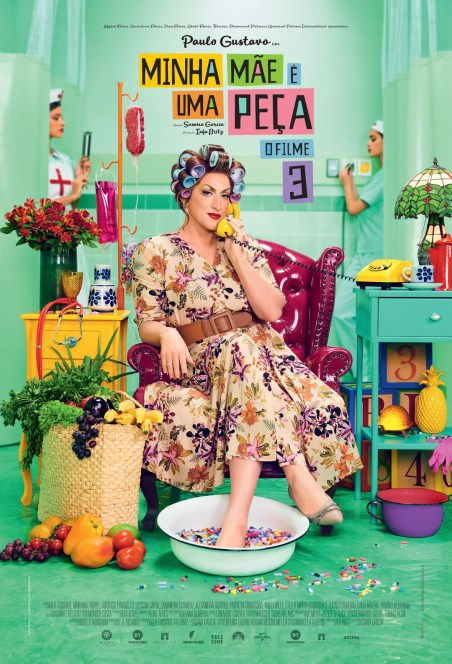

X: A Marca da Morte
Em X: A Marca da Morte, novo filme de terror slasher do diretor Ti West, acompanha um grupo de cineastas pornográficos em sua gravação de um novo longa. Em 1979, Maxine, uma atriz pornô, Wayne seu namorado e produtor e mais um grupo de atores e pessoas vão para o Texas em uma fazenda, propriedade de Howard e Pearl, um casal idoso, para gravar o novo filme pornográfico The Farmer's Daughters. Quando o grupo chega na propriedade, são recebidos pelo casal - que apresenta estranhas características. Howard é temperamental com o grupo, sempre falando sobre sua espingarda, enquanto Pearl começa a perseguir Maxine silenciosamente. Com as gravações iniciando sem o conhecimento do proprietário do local, Pearl começa a agir estranhamente e pessoas passam a desaparecer. Howard acaba descobrindo o real motivo do filme e o elenco passa a ter que começar a lutar por suas vidas. No entanto, o idoso casal tem mais a esconder do que apenas não querer que sua pequena fazenda seja um cenário de filme adulto.
11/08/2022
Minha Mãe é uma Peça 3
Em Minha Mãe É Uma Peça 3, Dona Hermínia (Paulo Gustavo) vai ter que se redescobrir e se reinventar porque seus filhos estão formando novas famílias. Essa supermãe vai ter que segurar a emoção para lidar com um novo cenário de vida: Marcelina (Mariana Xavier) está grávida e Juliano (Rodrigo Pandolfo) vai casar. Dona Hermínia está mais ansiosa do que nunca! Para completar as confusões, Carlos Alberto (Herson Capri), seu ex-marido, que esteve sempre por perto, agora resolve se mudar para o apartamento ao lado.
26/12/2019
Free Guy
Em Free Guy - Assumindo o Controle, Guy é um personagem não-jogador (NPC) em Free City, um jogo de RPG online multijogador massivo (MMORPG) desenvolvido pela Soonami Studio. Sem saber que o mundo em que vive é um videogame, ele trabalha como caixa de banco ao lado de seu melhor amigo, o segurança do banco Buddy, em uma entediante rotina. No mundo real, Millie Rusk está tentando encontrar evidências de que o código-fonte que ela escreveu junto com seu amigo Walter "Keys" McKey foi roubado pelo desenvolvedor chefe de Soonami, Antwan Hovachelik. No jogo, Millie, que joga como Molotov Girl, chama a atenção de Guy cantando sua música favorita, "Fantasy" de Mariah Carey, e ele começa a se desviar de sua programação. Pegando um par de óculos de sol de um jogador roubando o banco, Guy vê Free City através de uma versão única da interface do jogador e surpreendentemente vira um jogador. Agora ele precisa aceitar sua realidade e lidar com o fato de que é o único que pode salvar o mundo.
19/08/2021
Gato de Botas 2: O Último Pedido
Em Gato de Botas 2: O Último Pedido, O Gato de Botas descobre que sua paixão pela aventura cobrou seu preço: por conta de seu gosto pelo perigo e pelo desrespeito à segurança pessoal, ele queimou oito de suas nove vidas. Com apenas uma vida restante, o Gato precisa pedir ajuda para uma antiga parceira - que atualmente é sua rival e inimiga mortal, Kitty Pata Mansa - para continuar vivo. Então, o destemido bichano parte em uma jornada épica pela Floresta Negra para encontrar a mítica Estrela dos Desejos, capaz de proporcionar o legendário Último Desejo e restaurar suas nove vidas.
05/01/2023